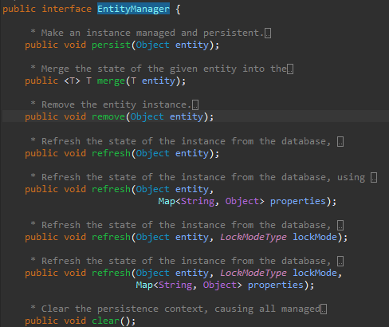

[Java] 47. JPAのEntityクラスのリファレンス設定(cascade, fetch)
こんにちは。明月です。
この投稿はJPAのEntityクラスのリファレンス設定(cascade, fetch)に関する説明です。
以前の投稿でIDEツール(eclipse)でJPAのEntityを自動生成して基本的に設定しなければならない方法に関して説明しました。
link - [Java] 46. JPAのEntityクラスの基本設定(@GeneratedValue、 @ManyToMany)
基本的な設定でプロジェクトを運用及び作成することは問題ないですが、パフォーマンスのためにもっと修正しなければならないことがあります。
例えば、以前投稿で使ったデータベースでuserテーブルを検索してinfoテーブルのデータを読み込むことで基本的な設定ではuserのリファレンステーブルのinfoデータがありません。
import java.util.List;
import java.util.Optional;
import javax.persistence.EntityManager;
import javax.persistence.EntityManagerFactory;
import javax.persistence.EntityTransaction;
import javax.persistence.Persistence;
import model.User;
import model.Info;
public class Main {
// ラムダ式のインタフェース
interface Expression {
void run(EntityManager em);
}
// PersistenceからEntityManagerを呼び出してから実行と終了する関数
private static void transaction(Expression lambda) {
// FactoryManagerを生成する。"JpaExample"はpersistence.xmlに書いている名だ。
EntityManagerFactory emf = Persistence.createEntityManagerFactory("JpaExample");
// Managerを生成する。
EntityManager em = emf.createEntityManager();
try {
// transactionを取得。
EntityTransaction transaction = em.getTransaction();
try {
// transaction実行
transaction.begin();
// ラムダ式を実行する。
lambda.run(em);
// transactionをコミットする。
transaction.commit();
} catch (Throwable e) {
// エラーが発生すればrollbackする。
if (transaction.isActive()) {
transaction.rollback();
}
// エラー出力
e.printStackTrace();
}
} finally {
// 各FactoryManagerとManagerを閉める。
em.close();
emf.close();
}
}
// 実行関数
@SuppressWarnings("unchecked")
public static void main(String... args) {
transaction((em) -> {
// userテーブルでデータを取得
List<User> users = em.createNamedQuery("User.findAll").getResultList();
// nowonbunデータ取得
User user = users.stream().filter(x -> "nowonbun".equals(x.getId())).findFirst().get();
// Stream式の場合、リファレンスデータを取得しない。
Optional<Info> info = user.getInfos().stream().findFirst();
// info値が開いているか確認
if(info.isEmpty()) {
// コンソール表示
System.out.println("Empty");
} else {
// データがあればコンソール表示
System.out.println(info.get().getIdx());
}
// get(0)でリファレンスデータデータを取得してidxを出力する。
System.out.println(user.getInfos().get(0).getIdx());
});
}
}
上の例をみればuserクラスでgetInfos()を呼び出してstream式でデータを出力すればデータがないことで出力します。
でも、get(0)やforeachを使ったら関数の呼び出す共にリファレンスデータをデータベースから取得します。
つまり、始めのuserクラスにはデータが無いですが、getとiteratorを呼び出したらその時にデータをデータベースから取得します。
仕様によりstream式を使わなかったら構いないですが、最近のプログラムコードはstream式を使わなかったらすごく複雑になるので、今は必須になっています。
これを解決する方法にはfetch設定です。
fetch
fetchは当該なクラスをデータベースから検索して取得する時、同時にリファレンスデータを取得するかgetの関数を使う時に取得するかのオプションです。
オプションの終了はEAGERとLAZYがあります。EAGERのオプションは当該なクラスの取得する時にJoinして取得するし、LAZYのオプションは関数の呼び出しがある時に取得します。
つまり、上の例みたいにgetの関数の呼び出しがある時に取得することはLAZYのオプションです。別に設定しなくても構いないのデフォルト設定です。
当該な変数にfetch = FetchType.EAGERを設定しました。
始めの例を、また実行したら今回にはコンソール出力にEmptyではなく、データが表示されます。
デバッグでポインタを掛けてuserを取得する段階で確認すればもうデータがあることを確認できます。
これをなぜオプションで選択することになったかと思えばデータ戦略により設定が変わります。
もしかして、我々がMasterテーブルから連結されているReferenceデータが一万件、十万件ならそのデータを取得する時、Joinデータを取得することだけで時間がすごくかかります。
newでクラスを生成することは考えより時間がすごくかかります。その時にはLAZY設定でデータを取得することがシステムに負担がありません。
でも、TransactionテーブルのReferenceデータがMasterの場合、システムの仕様によりデータチェックと分岐処理をする時によく使います。その時にデータベースに接続してデータを取得するコネクションが多くなると逆にシステムが遅くなります。
コネクションは結局Socketのリソースを使うことですが、IOと同じく使うシステムリソースなのですごく遅いです。
プログラム設計もこれをすごく注意しながらstream式よりはforeachとforを利用して検索することに設計するほうが良いです。
Cascade
Cascadeとはデータベースから永続性遷移ということのデータの一貫性を設定するオプションです。
例えば、DatabaseでUserのデータを削除するためには連結したinfoデータを削除しなければならないし、infoデータを削除するためには連結したinfo2データを削除しなければならないです。
もちろん、これがプログラムで順番でinfo2を削除してinfoを削除してuserを削除すればよいです。
この場合は二つの問題があります。一つはソースがすごく複雑になるし、関連データベースが変更するたびにソースをすべて修正しなければならない問題があります。こんなことになると我々がJPAを使う必要がありません。
もう一つ、問題がある部分がもしinfo2テーブルのデータを削除してinfoテーブルのデータを削除する動作でエラーが発生します。その場合はinfo2が削除されたので完全にrollbackができません。でも、これはtransactionの問題ですが、永続性遷移と関係があります。
つまり、一括で削除されなければならないです。
Cascadeオプションで設定することができます。
import java.util.List;
import java.util.Optional;
import javax.persistence.EntityManager;
import javax.persistence.EntityManagerFactory;
import javax.persistence.EntityTransaction;
import javax.persistence.Persistence;
import model.User;
import model.Info;
public class Main {
// ラムダ式のインタフェース
interface Expression {
void run(EntityManager em);
}
// PersistenceからEntityManagerを呼び出してから実行と終了する関数
private static void transaction(Expression lambda) {
// FactoryManagerを生成する。"JpaExample"はpersistence.xmlに書いている名だ。
EntityManagerFactory emf = Persistence.createEntityManagerFactory("JpaExample");
// Managerを生成する。
EntityManager em = emf.createEntityManager();
try {
// transactionを取得。
EntityTransaction transaction = em.getTransaction();
try {
// transaction実行
transaction.begin();
// ラムダ式を実行する。
lambda.run(em);
// transactionをコミットする。
transaction.commit();
} catch (Throwable e) {
// エラーが発生すればrollbackする。
if (transaction.isActive()) {
transaction.rollback();
}
// エラー出力
e.printStackTrace();
}
} finally {
// 各FactoryManagerとManagerを閉める。
em.close();
emf.close();
}
}
// 実行関数
@SuppressWarnings("unchecked")
public static void main(String... args) {
transaction((em) -> {
// userテーブルからデータ取得
List<User> users = em.createNamedQuery("User.findAll").getResultList();
// nowonbunデータ取得
User user = users.stream().filter(x -> "nowonbun".equals(x.getId())).findFirst().get();
// データ削除
em.remove(user);
});
}
}
上の例はuserテーブルでnowonbunを検索して削除するコードです。別にinfoテーブルのデータとinfo2テーブルのデータは検索もしてなかったし、削除する時にエラーが発生しませんでした。
当該なデータベースを確認しても綺麗に削除されていました。
でも、cascade設定もかってに設定するとダメです。
もしtransactionテーブルを削除する時にmasterテーブルのデータが削除されるか、間違いロジックコードで重要なデータが続けて削除されたらNGです。
もちろん、削除だけではなく、修正、追加もルールによって動作しなければならないです。
| タイプ | |
|---|---|
| CascadeType.PERSIST | Entityが追加される時、関連なEntityも追加する。 |
| CascadeType.MERGE | Entityが修正される時、関連なEntityも修正する。 |
| CascadeType.REFRESH | Entityが更新される時、関連なEntityも更新する。 |
| CascadeType.REMOVE | Entityが削除される時、関連なEntityも削除する。 |
| CascadeType.DETACH | 親のEntityがdetach()を実行されると、関連なEntityもdetach()状況になり変更事項が反映されない。 |
| CascadeType.ALL | 全てのCascadeが反映 |
ここのcascadeオプションはEntityManagerのクラスの関数と関係があります。

つまり、各Entityクラスのインスタンスをどの関数で使って追加、削除、修正する時にリファレンスクラスに影響になることです。
fetchオプションとcascadeオプションは状況により設定しなくてもORMを運用することで問題がありません。しかし、パフォーマンスには差異がなりますね。
そしてコードを作成して後にテーブルが変更があればメンテナンスする時も差異があります。
ここまでJPAのEntityクラスのリファレンス設定(cascade, fetch)に関する説明でした
ご不明なところや間違いところがあればコメントしてください。
- [Java] 53. ウェブサービス(Web service)でエラーページを処理する方法2021/06/25 13:35:54
- [Java] 52. SpringフレームワークでDAOをFactory method Patternを利用して依存性注入する方法2019/10/17 07:15:48
- [Java] 51. SpringフレームワークでJPAを使い方(依存性注入@Autowired)2019/10/16 07:32:55
- [Java] 50. JPAプロジェクトでDAOクラスを作成する方法2019/10/15 20:12:35
- [Java] 49. JPAでトランザクション(transaction)を扱う方法と共通関数作成する方法(Observerパターン)2019/10/14 20:13:44
- [Java] 48. JPAでQueryを使う方法(JPQLクエリを作成する方法)2019/10/13 22:55:52
- [Java] 47. JPAのEntityクラスのリファレンス設定(cascade, fetch)2019/10/13 00:40:08
- [Java] 46. JPAのEntityクラスの基本設定(@GeneratedValue、 @ManyToMany)2019/10/11 07:30:14
- [Java] 45. JPAを設定する方法2019/10/10 07:29:43
- [Java] 44. Web Spring frameworkのviewで使うプログラム言語(JSTL) - XML2019/10/09 07:34:08
- [Java] 43. Web Spring frameworkのviewで使うプログラム言語(JSTL) - 関数、データベース2019/10/08 07:43:33
- [Java] 42. Web Spring frameworkのviewで使うプログラム言語(JSTL) - コア―、フォーマット2019/10/07 07:38:13
- [Java] 41. Web Spring webframeworkのControllerからajaxの要請する時、jsonタイプのデータを返却する方法2019/10/04 19:24:43
- [Java] 40. Web Spring frameworkでControllerを扱う方法2019/10/03 20:02:06
- [Java] 53. ウェブサービス(Web service)でエラーページを処理する方法2021/06/25 13:35:54
- [Design pattern] 1-3. ファクトリメソッドパターン(Factory method pattern)2021/06/23 19:45:37
- [Java] WebSocketでチャット履歴をローディングする方法2021/06/15 18:34:45
- [Java] WebSocketを利用してユーザ(サイト運用者)が他のユーザとチャットする方法2021/06/15 17:20:08
- [Design pattern] 1-2. ビルダーパターン(Builder pattern)2021/06/11 19:06:28
- [Design pattern] 1-1. シングルトンパターン(Singleton pattern)2021/06/09 19:40:05
- [Design Pattern] デザインパターンの紹介2021/06/08 20:42:36
- [Tools] Dbeaver(無料Sql queryブラウザツール)2021/04/28 18:26:49
- [Bootstrap] HTMLデザインのフレームワークのBootstrap紹介2020/07/30 19:06:36
- [Python] メール(smtplib)を送信する方法2020/07/27 18:38:43
- [Python] HttpConnection(requestsモジュール)でウェブサーバーで接続する方法2020/07/20 14:41:51
- [Python] Excel(openpyxl)を扱う方法2020/07/16 16:40:31
- [Python] ファイル圧縮、解凍(zipfile)する方法2020/07/14 19:14:22
- [Python] Apache cgiでPythonを使う方法2020/07/09 19:58:19
- [Python] Web serverを起動する方法(http.server)2020/07/09 00:13:13